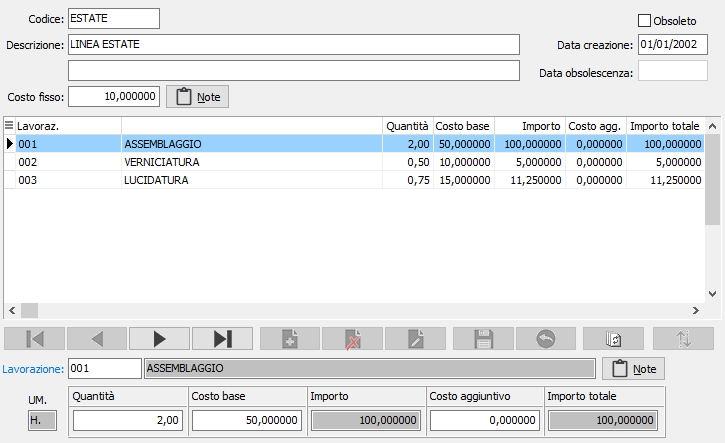
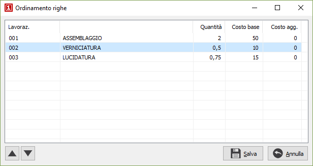

Schede di lavorazione
La procedura consente la compilazione di schede di lavorazione assegnabili a singole distinte base. I dati contenuti nella scheda andranno a comporre la valorizzazione della distinta stessa. Sulla toolbar sono disponibili i tasti di Stampa ed Anteprima di stampa per stampare le schede di lavorazioni inserite.

Dati generali
CODICE: codice alfanumerico di 10 caratteri per identificare il codice della scheda di lavorazione in esame. Sul campo sono attive le funzioni di ricerca (F9) sulla tabella stessa.
DESCRIZIONI: due campi alfanumerici di 50 caratteri per descrivere la lavorazione.
COSTO FISSO: eventuale costo fisso imputabile alla scheda di lavorazione.
BOTTONE NOTE: dà accesso ad un campo note su più righe per inserire eventuali annotazioni in merito all’utilizzazione della scheda.
DATA CREAZIONE: indica la data in cui la scheda è stata caricata. Al momento del caricamento di un nuovo record in questo campo viene proposta la data di sistema.
DATA OBSOLESCENZA: indica la data in cui la scheda è stata dichiarata obsoleta.
OBSOLETO: flag attivabile dall’utente per inibire il possibile utilizzo dell’elemento di tabella in esame nelle successive transazioni. Spuntando la casella sarà automaticamente assegnata alla data obsolescenza la data di sistema.
Dati delle singole lavorazioni
Se configurato l'utilizzo del lavorante sulla scheda è presente il seguente campo:
LAVORANTE: eventuale codice del lavorante da utilizzare per l'assegnazione delle lavorazioni. Il campo è presente solo se è stata attivata la gestione del lavorante sulla scheda di lavorazione in configurazione. Sul campo sono attive le funzioni di ricerca (F9) sulla tabella lavoranti.
LAVORAZIONE: codice alfanumerico di 3 caratteri per identificare la lavorazione. Sul campo sono attive le funzioni di ricerca (F9) sulla tabella stessa.
BOTTONE NOTE: dà accesso ad un campo note su più righe per inserire eventuali annotazioni in merito all’utilizzazione della lavorazione.
QUANTITÀ: indica la quantità necessaria, nell'unità di misura della lavorazione.
COSTO BASE: indica il costo della lavorazione, viene riportato in automatico dalla tabella lavorazioni.
COSTO AGGIUNTIVO: eventuale costo aggiuntivo da imputare alla lavorazione.
Vengono visualizzati anche gli importi della singola lavorazione, il parziale dato da quantità per costo base e l'importo totale, comprensivo dell'eventuale costo aggiuntivo.
 Tramite il pulsante Ordina è possibile modificare l'ordinamento delle righe di lavorazione spostandole singolarmente tramite gli appositi tasti di scorrimento oppure selezionando e trascinando le singole righe. La pressione sul pulsante Salva determina la modifica effettiva dell'ordinamento.
Tramite il pulsante Ordina è possibile modificare l'ordinamento delle righe di lavorazione spostandole singolarmente tramite gli appositi tasti di scorrimento oppure selezionando e trascinando le singole righe. La pressione sul pulsante Salva determina la modifica effettiva dell'ordinamento.
